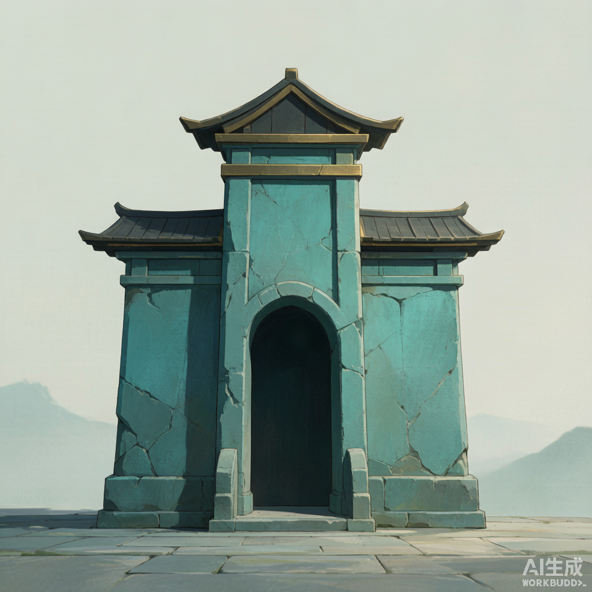
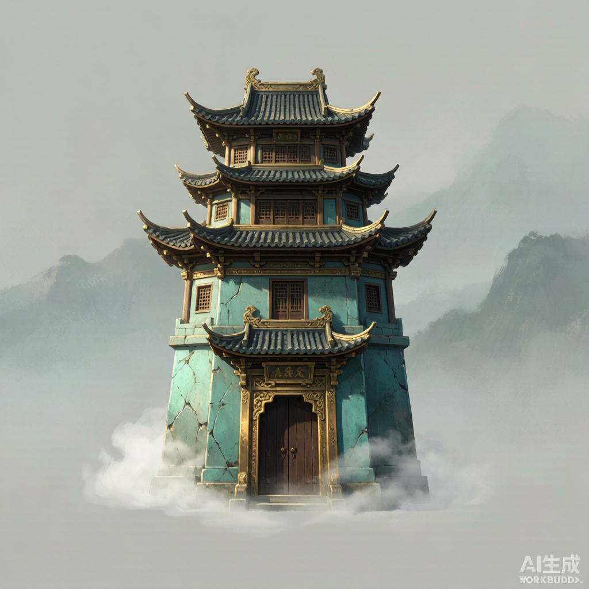
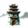
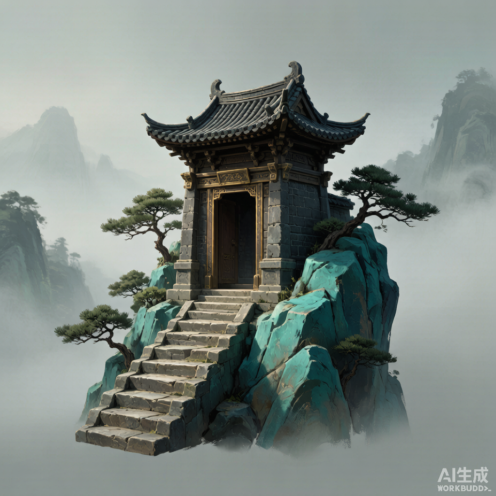
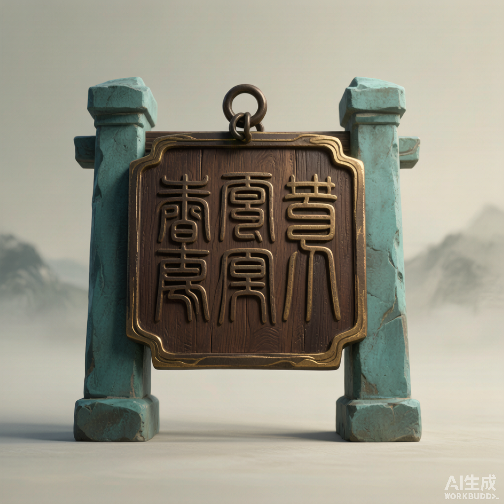
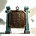
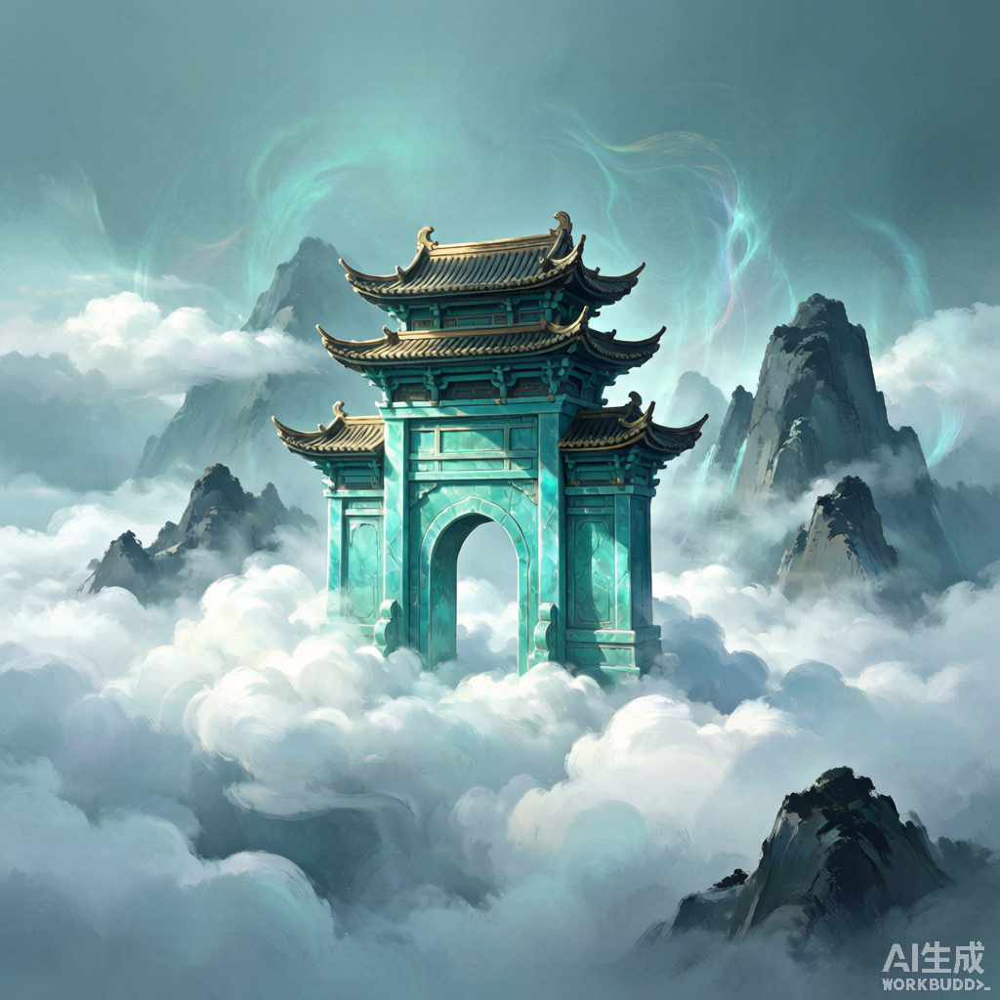

山门图标 · 5 种变体预览
风格锚定 01 背景图：青黛冷调 + 暗金檐口 + 国风厚涂。下图为 1024×1024 原始大图高质量缩放，
右下角叠加实际落位尺寸 36×36，可判断缩图后的辨识度。
01 · 正视牌坊

实际 36×36
对称石坊，门洞与屋顶层次清晰。缩图后剪影最稳，最容易辨认。
02 · 多层楼阁


实际 36×36
飞檐层叠，暗金檐口明显。大图气势好，但缩到 36×36 细节偏密。
03 · 登山台阶

实际 36×36
山体 + 松树 + 门楼组合，元素多。小图略显拥挤，更像场景而不是入口。
04 · 石碑匾额


实际 36×36
匾额悬挂，缩后文字失效。整体更像书卷/文书类图标，山门识别度弱。
05 · 云端山门

实际 36×36
云海门楼，仙气感最强，风格最接近 01 背景。缩图后门楼主体仍突出。